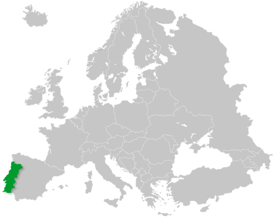

Sobre Portugal
História
Portugal foi fundado em 1143 com o Tratado de Zamora, sendo reconhecido como reino
independente, confirmação reforçada em 1179 pelo Papa. Nos séculos XII e XIII, o
território foi ampliado até a conquista do Algarve, mantendo praticamente as mesmas
fronteiras até hoje. Nesse período, o país se estruturou internamente, com destaque para
a criação da Universidade de Coimbra e o fortalecimento das cidades, castelos e da
administração.
Em 1385, iniciou-se a dinastia de Avis com D. João I. Nos séculos XV e XVI, Portugal
destacou-se nas Grandes Navegações, lideradas por figuras como o Infante D. Henrique.
Navegadores portugueses chegaram à Índia (Vasco da Gama) e ao Brasil (Pedro Álvares
Cabral), além de outras regiões da África e da Ásia, formando um vasto império marítimo.
Esse período marcou o auge do poder e da riqueza portuguesa.
Após esse auge, o país enfrentou crises, como a morte de D. Sebastião e a união com a
Espanha (1580–1640). A independência foi restaurada em 1640 com D. João IV. No século
XVIII, houve grande desenvolvimento e construção de obras importantes, mas o terremoto
de 1755 destruiu Lisboa, que foi reconstruída pelo Marquês de Pombal.
No século XIX, Portugal passou por invasões napoleônicas, a transferência da corte para
o Brasil e profundas mudanças políticas, incluindo a implantação do liberalismo e
guerras civis entre absolutistas e liberais, encerradas em 1834 com a monarquia
constitucional.
No início do século XX, a monarquia foi derrubada (1910) e instaurada a República. Após
um período de instabilidade, foi implantado o Estado Novo, uma ditadura liderada por
Salazar, que durou até 1974. Nesse ano, a Revolução dos Cravos restaurou a democracia e
levou ao fim do regime autoritário, além de reconhecer a independência das colônias
africanas.
Dados Gerais
Localização Geográfica
Portugal, oficialmente República Portuguesa, é um Estado da Europa Meridional, fundado em 1143, que ocupa uma área total de 92.212 Km2. A parte continental situa-se no extremo Sudoeste da Península Ibérica, fazendo fronteira a norte e a leste com a Espanha, e a oeste e a sul com o Oceano Atlântico. O território português inclui ainda duas regiões autónomas: os arquipélagos da Madeira e dos Açores, localizados no Oceano Atlântico. O arquipélago da Madeira é constituído pelas ilhas da Madeira, Porto Santo, Desertas e Selvagens, e o arquipélago dos Açores é formado por nove ilhas e alguns ilhéus: Santa Maria, São Miguel, Terceira, Graciosa, São Jorge, Pico, Faial, Flores e Corvo.

Clima
O clima português é caracterizado por invernos suaves e verões amenos, variando, no entanto, de região para região. No norte registam-se precipitações mais elevadas e temperaturas mais baixas, mas é no interior que se registam as maiores amplitudes térmicas. A sul do Tejo, o maior rio da Península Ibérica, fazem-se sentir as influências mediterrânicas, com verões bastante quentes e prolongados, e invernos curtos e de pouca pluviosidade. A Madeira regista um clima de tipo mediterrânico com temperaturas amenas todo o ano, enquanto os Açores apresentam um clima temperado marítimo com chuvas abundantes.
A bandeira Portuguesa
Após a instauração da República, um decreto da Assembleia Nacional constituinte, datado de 19 de Junho de 1911, aprovou uma nova Bandeira Nacional. A Bandeira Portuguesa é dividida verticalmente em duas cores: verde-escuro e vermelho – ficando o verde do lado da tralha ou do mastro. Ao centro, sobreposto à união das cores, o escudo das armas nacionais, orlado de branco, sobre a esfera armilar, em amarelo e avivada de negro. O comprimento da bandeira é de vez e meia a altura da tralha. A divisória entre as duas cores fundamentais é feita com dois quintos do comprimento total ocupados pelo verde e os três quintos restantes pelo vermelho. O emblema ocupa metade da altura, ficando equidistante das orlas superior e inferior.
Hino Nacional: A Portuguesa
Heróis do mar, nobre povo,
Nação valente, imortal,
Levantai hoje de novo
O esplendor de Portugal!
Entre as brumas da memória,
Ó Pátria, sente-se a voz
Dos teus egrégios avós,
Que há-de guiar-te à vitória!
Às armas, às armas!
Sobre a terra, sobre o mar,
Às armas, às armas!
Pela Pátria lutar
Contra os canhões marchar, marchar!